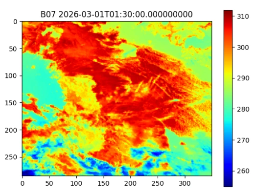

PROJECT 17 / 위성 데이터 · 머신러닝PROJECT 17 / Satellite Data · Machine Learning
LightGBM을 이용한 위성 관측값 기반 산불 감지Wildfire Detection from Satellite Observations Using LightGBM
위성 관측과 화점 자료로 산불 분류를 실험했으며, 학습 범위 확대와 낮은 오탐 조건에서 성능 한계가 드러났습니다.Experimented with wildfire classification using satellite observations and hotspot data; performance limits emerged when the training window was widened and under low false-positive conditions.
01 문제 상황 Problem
위성의 넓은 관측 범위를 활용해 산불을 빠르게 감지하려면 서로 다른 위성의 시간·공간 해상도를 맞춰야 합니다. 적외선 신호에서 산불 여부를 판별하고, 나아가 화재 복사 에너지까지 추정하는 모델을 시도했습니다.Detecting wildfires quickly using the wide coverage of satellites requires aligning the temporal and spatial resolutions of different satellites. The project attempted a model that determines whether a wildfire is present from infrared signals and further estimates fire radiative power.
02 사용 모델과 데이터 Models and Data
모델·기술Models · Techniques
- LightGBM 2단계 구성: Stage A는 산불 여부의 이진 분류, Stage B는 화재 복사 에너지(FRP) 회귀입니다.Two-stage LightGBM setup: Stage A is binary classification of wildfire occurrence, and Stage B is regression of fire radiative power (FRP).
- 밴드 차이·비율과 신뢰도 등 10개 특징을 구성하고, 메모리 제약을 고려해 시간 단위로 학습을 이어 갔습니다.Constructed 10 features including band differences, band ratios, and confidence, and trained incrementally by hour to accommodate memory constraints.
데이터·입력Data · Inputs
- Himawari-9와 천리안위성 2A호(GK2A)의 적외선 관측값.Infrared observations from Himawari-9 and GEO-KOMPSAT-2A (GK2A).
- FIRMS의 VIIRS 375m 및 Himawari 화점 자료를 기준 격자에 연결했습니다. 공간 근접도와 관측 신뢰도를 활용해 학습 표적을 구성했습니다.VIIRS 375 m and Himawari hotspot data from FIRMS were mapped onto a reference grid. Training targets were constructed using spatial proximity and observation confidence.
03 구현 과정 Implementation
- 위성 밴드와 화점 자료의 시각·좌표를 맞추고 관측 영역을 공통 격자로 정리합니다.Aligns the timestamps and coordinates of satellite bands and hotspot data, and organizes the observation area onto a common grid.
- 적외선 특징을 계산하고, 인접 화점과의 거리·신뢰도를 반영해 학습 자료를 구성합니다.Infrared features are computed, and training data is built incorporating distance to neighboring fire points and confidence values.
- 산불 여부 분류를 학습한 뒤 시간 범위와 오탐 기준을 바꾸어 평가하고, 양성 자료로 FRP 회귀를 시도합니다.After training a wildfire classifier, it is evaluated under varying time windows and false-positive thresholds, and FRP regression is attempted on positive samples.
04 핵심 결과 Key Results
- 1시간 학습 · PR-AUC1-hour training · PR-AUC
- 0.664
- 4시간 학습 · PR-AUC4-hour training · PR-AUC
- 0.301
- 1시간 · FAR 0.001에서 재현율Recall at FAR 0.001 · 1 hour
- 4.21%
제출 자료에 보고된 실험 수치입니다.Experimental figures as reported in the submitted materials.
- 1시간 학습의 PR-AUC는 0.663744, ROC-AUC는 0.941097이었고, 4시간 학습에서는 각각 0.301147, 0.833375로 낮아졌습니다.With 1-hour training, PR-AUC was 0.663744 and ROC-AUC 0.941097; with 4-hour training they dropped to 0.301147 and 0.833375, respectively.
- 오탐률을 0.001로 제한한 1시간 모델의 재현율은 약 4.21%였습니다. Stage B는 양성 표본 부족으로 충분한 학습 결과를 얻지 못했습니다.With the false positive rate limited to 0.001, the recall of the 1-hour model was about 4.21%. Stage B did not yield sufficient training results due to a shortage of positive samples.

05 한계와 발전 방향 Limitations and Next Steps
- 클래스 불균형과 위성 간 시공간 정렬, 메모리 제약이 결과에 영향을 줍니다. ROC-AUC만으로 실제 감지 성능을 판단하기 어렵습니다.Class imbalance, spatiotemporal alignment between satellites, and memory constraints affect the results. ROC-AUC alone is not sufficient to judge real-world detection performance.
- 구름·육지 마스킹과 데이터 처리 개선이 남아 있으며, 별도 기간의 실제 운영 환경에서 검증한 결과는 아닙니다.Cloud and land masking and data processing improvements remain, and the results have not been validated in a real operational setting over a separate period.
자료: 최종보고서. 제출 자료를 바탕으로 정리했으며, 결과는 해당 프로젝트의 구현·실험 범위에 해당합니다.Source: final report. Summarized from the submitted materials; results reflect the scope of the project's implementation and experiments.